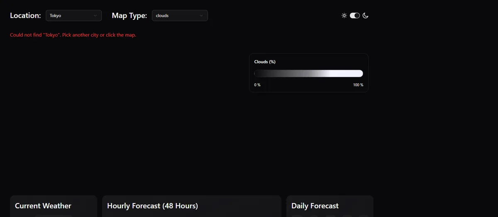
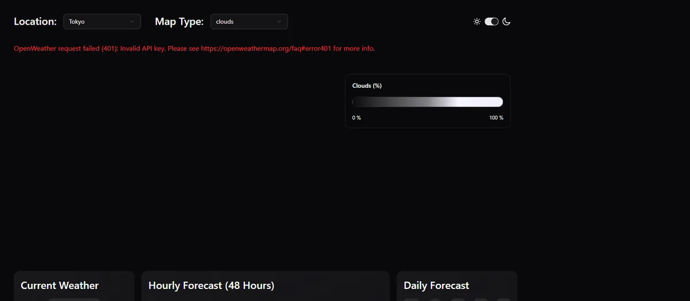

Fix the Bugs Found While Testing
No more lat 0 / lon 0 or "custom" requests, HTTPS everywhere, safe geocoding, the broken production marker, the map click leak and the lint errors.
Extension · built and browser-testedExtension: not in the video. Steps 25–28 start from the finished repo (commit 272cc5f, the only commit) and fix what a real browser test turned up. Every change on these pages was type-checked (tsc -b), linted (npm run lint), built (npm run build) and then run in headless Chrome against the production build, with OpenWeather answers replaced by fake but schema-valid test data and MapTiler blocked.
What that proves: the code compiles, the requests go out in the order shown, the error messages and screens below are real, and the bugs are gone. What it does not prove: how the real OpenWeather API answers for every city, your account's limits, or how the MapTiler base map looks (its tiles were blocked offline). Screenshots show test data, not real weather.
Goal
By the end of step 24 the dashboard looks finished, and in the video it works. But when the finished code was loaded in a browser with a request recorder and a few "unhappy" test answers (a city that isn't found, a wrong key, a place without translated names), it showed several real problems. Some waste requests, one crashes the whole page, one breaks once the app is deployed, and one only appears in the production build. In this step you fix them one at a time. For each one you see the before (the repo), the after (the fixed file), a line-by-line explanation, and what the browser test recorded.
| # | File | Problem in the repo | Fix |
|---|---|---|---|
| 1 | src/App.tsx | Every page load first asks for the weather at latitude 0, longitude 0 | coords is null until the city is known; cards show skeletons meanwhile |
| 2 | src/App.tsx | A city that isn't found crashes the whole page (blank screen) | Read geocodeData?.[0] safely and show "Could not find …" |
| 2b | src/App.tsx | A map click asks the geocoding API for a city called "custom" | enabled: location !== "custom" |
| 3 | src/schemas/geocodeSchema.ts | local_names is required, but many real places don't have it | .optional() |
| 4 | src/api.ts | No res.ok check: a 401 turns into a confusing Zod error | One fetchJson helper that checks the status first |
| 5 | src/api.ts | Geocoding and air pollution use http:// (blocked on an https site) | One https:// base URL |
| 6 | src/api.ts | City name not encoded in the URL | encodeURIComponent |
| 7 | src/components/Map.tsx | Map marker is a broken image in the production build | Import the marker images; pass L.icon(...) |
| 8 | src/components/Map.tsx | A new click listener is added on every re-render | useMapEvents + useEffect |
| 9 | src/components/Map.tsx | MapTiler key written in the code (and in the public repo) | VITE_MAPTILER_KEY from .env |
| 10 | LocationDropdown.tsx | Placeholder says "Theme" | "Location" |
| 11 | 6 skeletons + LightDarkToggle.tsx | 14 of the 15 lint errors: empty Props types | Remove the empty props |
App.tsx and api.ts: they cause the visible bugs. The rest can be done in any order.Before you start
- Open the project and a terminal
Open your weather project folder (the one with
package.json) in your editor and open a terminal there. All commands on this page run from that folder. - Save a checkpoint
Run
git add .andgit commit -m "before fixes". If an edit goes wrong you can compare with the working version. - Look at the lint result first
Run
npm run lint. On the repo version this prints✖ 15 problems (15 errors, 0 warnings). You will bring that down to 1 in this step and to 0 in step 27. (npm run buildstill succeeds today: lint rules are separate from the type check.)
Fix 1: no more requests for latitude 0, longitude 0 (App.tsx)
When the page opens, location is "Tokyo". The geocoding query has to ask OpenWeather where Tokyo is before anything else can happen. Here is how the repo turns the answer into coordinates:
const { data: geocodeData } = useQuery({
queryKey: ["geocode", location],
queryFn: () => getGeocode(location),
})
const onMapClick = (lat: number, lon: number) => {
setCoords({ lat, lon })
setLocation("custom")
}
const coords =
location === "custom"
? coordinates
: { lat: geocodeData?.[0].lat ?? 0, lon: geocodeData?.[0].lon ?? 0 }While the geocode request is still on its way, geocodeData is undefined. Then geocodeData?.[0].lat is undefined too, and ?? 0 replaces it with 0. So for a moment coords is { lat: 0, lon: 0 }, a real place in the Atlantic Ocean. Every card receives those coordinates and immediately starts its own query. The browser test recorded this order on every load:
1 https://api.openweathermap.org/data/3.0/onecall?lat=0&lon=0&...
2 http://api.openweathermap.org/data/2.5/air_pollution?lat=0&lon=0
3 http://api.openweathermap.org/geo/1.0/direct?q=Tokyo&limit=1
4 https://api.openweathermap.org/data/3.0/onecall?lat=35.68&lon=139.69&...
5 http://api.openweathermap.org/data/2.5/air_pollution?lat=35.68&lon=139.69Two of the five requests are wasted (they count against your API usage), and the map briefly centres on the ocean. In step 15 the presenter notices exactly this symptom (at 2:28:00, "it flickers to looks like the middle of the ocean first") and changes how the map moves, but the cause, the ?? 0, stays in the final code.
New to ?. and ??? What they do and why ?? 0 hides a problem here
Optional chaining a?.b means: "if a is null or undefined, stop and give undefined; otherwise read a.b". Nullish coalescing x ?? y means: "use x, unless it is null or undefined; then use y".
Together they are handy for defaults, but a default is only correct when it is a sensible value. Here 0 is not "no location yet", it is a real latitude and longitude. The code can't tell "loading" apart from "the user picked 0,0". The fix uses null, which honestly means "we don't know yet", and makes TypeScript force every user of coords to handle that case.
const data: { lat: number }[] | undefined = undefined
data?.[0].lat // undefined (no crash, data is undefined)
data?.[0].lat ?? 0 // 0 (looks like a real coordinate!)Fix 2: a city that isn't found no longer crashes the page (App.tsx)
The same line has a second problem. If OpenWeather finds nothing it answers with an empty list []. Then geocodeData is [], geocodeData?.[0] is undefined, and .lat is read from undefined. The ?. only protects the step it is written on (geocodeData), not the [0] after it. With a test answer of [] the whole app disappeared and the console showed:
TypeError: Cannot read properties of undefined (reading 'lat')A blank page is the worst possible outcome: the user can't even pick another city. A render error like this removes the whole React tree unless an error boundary catches it (that comes in step 26). Here the better fix is not to throw at all. Below is the complete fixed App.tsx; it fixes 1 and 2 together.
import DailyForecast from "./components/cards/DailyForecast"
import HourlyForecast from "./components/cards/HourlyForecast"
import CurrentWeather from "./components/cards/CurrentWeather"
import AdditionalInfo from "./components/cards/AdditionalInfo"
import Map from "./components/Map"
import { Suspense, useState } from "react"
import type { Coords } from "./types"
import LocationDropdown from "./components/dropdowns/LocationDropdown"
import { useQuery } from "@tanstack/react-query"
import { getGeocode } from "./api"
import MapTypeDropdown from "./components/dropdowns/MapTypeDropdown"
import MapLegend from "./components/MapLegend"
import CurrentSkeleton from "./components/skeletons/CurrentSkeleton"
import DailySkeleton from "./components/skeletons/DailySkeleton"
import HourlySkeleton from "./components/skeletons/HourlySkeleton"
import AdditionalInfoSkeleton from "./components/skeletons/AdditionalInfoSkeleton"
import SidePanel from "./components/SidePanel"
import Hamburger from "/src/assets/hamburger.svg?react"
import MobileHeader from "./components/MobileHeader"
import LightDarkToggle from "./components/LightDarkToggle"
function App() {
const [coordinates, setCoords] = useState<Coords>({ lat: 50, lon: 45 })
const [location, setLocation] = useState("Tokyo")
const [mapType, setMapType] = useState("clouds_new")
const [isSidePanelOpen, setIsSidePanelOpen] = useState(false)
const { data: geocodeData, error: geocodeError } = useQuery({
queryKey: ["geocode", location],
queryFn: () => getGeocode(location),
enabled: location !== "custom", // a map click sets "custom": there is no city to look up
})
const onMapClick = (lat: number, lon: number) => {
setCoords({ lat, lon })
setLocation("custom")
}
const place = geocodeData?.[0]
// null until we know where to look: no requests for lat 0 / lon 0 while the city is loading
const coords: Coords | null =
location === "custom" ? coordinates : place ? { lat: place.lat, lon: place.lon } : null
return (
<>
<MobileHeader setIsSidePanelOpen={setIsSidePanelOpen} />
<div className="flex flex-col gap-8 pt-4 p-8 xs:pt-8 lg:w-[calc(100dvw-var(--sidebar-width))] 2xl:h-screen 2xl:min-h-[1120px]">
<div className="flex flex-col gap-4 xs:flex-row xs:gap-8">
<div className="flex flex-col md:flex-row gap-2 md:gap-4">
<h1 className="text-2xl font-semibold">Location: </h1>
<LocationDropdown location={location} setLocation={setLocation} />
</div>
<div className="flex flex-col md:flex-row gap-2 md:gap-4">
<h1 className="text-2xl font-semibold whitespace-nowrap">
Map Type:{" "}
</h1>
<MapTypeDropdown mapType={mapType} setMapType={setMapType} />
</div>
<div className="ml-auto flex gap-4 items-center">
<div className="hidden xs:block">
<LightDarkToggle />
</div>
<button
onClick={() => setIsSidePanelOpen(true)}
className="hidden xs:block"
>
<Hamburger className="size-6 lg:hidden" />
</button>
</div>
</div>
{location !== "custom" && geocodeError && (
<p role="alert" className="text-red-500">
{geocodeError.message}
</p>
)}
{location !== "custom" && geocodeData && !place && (
<p role="alert" className="text-red-500">
Could not find "{location}". Pick another city or click the map.
</p>
)}
<div className="grid grid-cols-1 2xl:flex-1 2xl:min-h-0 md:grid-cols-2 2xl:grid-cols-4 2xl:grid-rows-4 gap-4">
<div className="relative h-120 2xl:h-auto col-span-1 md:col-span-2 2xl:col-span-4 2xl:row-span-2 order-1">
{coords && <Map coords={coords} onMapClick={onMapClick} mapType={mapType} />}
<MapLegend mapType={mapType} />
</div>
<div className="col-span-1 2xl:row-span-2 order-2">
<Suspense fallback={<CurrentSkeleton />}>
{coords ? <CurrentWeather coords={coords} /> : <CurrentSkeleton />}
</Suspense>
</div>
<div className="col-span-1 order-3 2xl:order-4 2xl:row-span-2">
<Suspense fallback={<DailySkeleton />}>
{coords ? <DailyForecast coords={coords} /> : <DailySkeleton />}
</Suspense>
</div>
<div className="col-span-1 md:col-span-2 2xl:row-span-1 order-4 2xl:order-3">
<Suspense fallback={<HourlySkeleton />}>
{coords ? <HourlyForecast coords={coords} /> : <HourlySkeleton />}
</Suspense>
</div>
<div className="col-span-1 md:col-span-2 2xl:row-span-1 order-5">
<Suspense fallback={<AdditionalInfoSkeleton />}>
{coords ? <AdditionalInfo coords={coords} /> : <AdditionalInfoSkeleton />}
</Suspense>
</div>
</div>
</div>
{coords && (
<SidePanel
coords={coords}
isSidePanelOpen={isSidePanelOpen}
setIsSidePanelOpen={setIsSidePanelOpen}
/>
)}
</>
)
}
export default App
// styling - Tailwind
// data fetching - TanStack Query (React Query)Line by line (the changed lines)
| Line(s) | Code | What it does & why |
|---|---|---|
| 28 | const { data: geocodeData, error: geocodeError } = useQuery({ | Same TanStack Query call as before, but now it also takes out error and renames it geocodeError (that is destructuring with renaming). It holds the error if the geocode request failed after its retries; otherwise null. Without it the user would never learn why nothing loads. |
| 29–30 | queryKey: ["geocode", location],queryFn: () => getGeocode(location), | Unchanged. The query key includes the city, so each city is cached separately; the query function calls the fixed getGeocode from api.ts. |
| 31 | enabled: location !== "custom", // a map click sets "custom": ... | Fix 2b (below): the geocode query only runs when location is a real city name. enabled: false tells TanStack Query "don't fetch for now"; the query wakes up again as soon as the value becomes true. |
| 39 | const place = geocodeData?.[0] | Takes the first result, or undefined when the data hasn't arrived yet or the list is empty. This is the only place that indexes the list, and it never reads a property from undefined, so the crash of fix 2 can't happen. |
| 40 | // null until we know where to look: ... | A comment for the next reader explaining why null is used. |
| 41–42 | const coords: Coords | null = location === "custom" ? coordinates : place ? { lat: place.lat, lon: place.lon } : null | Two nested ternaries (condition ? a : b). If the user clicked the map, use the clicked coordinates. Otherwise, if we have a place, use its lat/lon. Otherwise null. The type annotation Coords | null tells TypeScript that null is allowed, and from now on TypeScript refuses to pass coords to a component that needs a real Coords until you have checked it. |
| 71–75 | {location !== "custom" && geocodeError && ( <p role="alert" className="text-red-500"> {geocodeError.message} | Shows the geocode error's message in red under the header. a && b && (<p>…) is JSX conditional rendering: if both conditions are true React renders the paragraph, otherwise nothing. role="alert" makes screen readers announce it (accessibility). The message itself comes from fetchJson in fix 4, so it is readable. location !== "custom" hides the old city error once the user clicks the map. |
| 76–80 | {location !== "custom" && geocodeData && !place && ( ... Could not find "{location}". Pick another city or click the map. | The "empty list" case: the request worked (geocodeData exists) but there is no first result. Instead of crashing, tell the user what happened and what to do next. {location} inserts the city name. |
| 83 | {coords && <Map coords={coords} ... />} | Only render the map when there are coordinates. Inside the &&, TypeScript knows coords is not null (this is called narrowing), so the Map props still type-check. The legend on line 84 stays visible. |
| 87–89 | <Suspense fallback={<CurrentSkeleton />}> {coords ? <CurrentWeather coords={coords} /> : <CurrentSkeleton />} | While coords is null, show the same skeleton the Suspense fallback shows. The user sees one smooth "loading" state, and CurrentWeather (with its useSuspenseQuery) is not even created, so no request goes out for a made-up place. |
| 92–104 | (same pattern for DailyForecast, HourlyForecast, AdditionalInfo) | Each card gets the same coords ? card : skeleton choice with its own skeleton. |
| 108–114 | {coords && ( <SidePanel coords={coords} ... /> | The side panel fetches air pollution, so it also waits for real coordinates. This removes the air_pollution?lat=0&lon=0 request. |
null means "not known yet", and every component that needs coordinates waits for it instead of guessing 0.
[]: a clear message instead of a blank page. (Test data, not real weather; base map tiles blocked in the test.)Fix 2b: a map click no longer looks up a city called "custom" (App.tsx)
When you click the map, onMapClick stores the clicked point and sets location to the special value "custom" (step 13). But the geocode query's key is ["geocode", location], so a new key means a new request, and the repo sends one: it asks OpenWeather for a city named "custom". The answer is useless at best (the app ignores it, because coords uses the clicked point for "custom"), and it costs an API call on every first click. The browser test clicked the map and recorded these requests right after the click:
https://api.openweathermap.org/data/3.0/onecall?lat=...&lon=...
http://api.openweathermap.org/data/2.5/air_pollution?lat=...&lon=...
http://api.openweathermap.org/geo/1.0/direct?q=custom&limit=1https://api.openweathermap.org/data/3.0/onecall?lat=...&lon=...
https://api.openweathermap.org/data/2.5/air_pollution?lat=...&lon=...The fix is line 31 of the file above: enabled: location !== "custom". While enabled is false, TanStack Query keeps the query idle: no request, data stays undefined, error stays null. When the user picks a city again from the dropdown, enabled becomes true and the query runs (or reuses its cache).
New to the enabled option? Dependent queries in TanStack Query
By default a useQuery fetches as soon as the component renders and whenever its query key changes. Sometimes a query must wait: for a value the user hasn't chosen yet, for another query's result, or, like here, it makes no sense for some values. enabled takes a boolean. false means "not now"; switching to true starts the fetch. This pattern is called a dependent query. Note that useSuspenseQuery (used by the cards) has no enabled option; that's why the cards use coords ? card : skeleton instead, so the card with the query isn't rendered at all until it can fetch.
Fix 3: local_names is optional (geocodeSchema.ts)
The Zod schema written in step 14 describes one geocoding result. It marks local_names (the city's name in other languages) as required:
local_names: z.record(z.string(), z.string()),Big cities like Tokyo have local_names, but OpenWeather leaves the field out for many smaller places. When it is missing, GeocodeSchema.parse throws a ZodError, TanStack Query retries three times, gives up, and geocodeData stays undefined. With the repo's ?? 0 that meant something sneaky: the browser test (a geocode answer without local_names) showed the dropdown saying the city while the cards showed the weather for 0,0, with no error on screen. The app doesn't even use local_names, so the fix is one word:
import z from "zod"
export const GeocodeSchema = z.array(
z.object({
name: z.string(),
local_names: z.record(z.string(), z.string()).optional(),
lat: z.number(),
lon: z.number(),
country: z.string(),
state: z.string().optional(),
})
)Line by line
| Line(s) | Code | What it does & why |
|---|---|---|
| 1 | import z from "zod" | Imports Zod, the validation library (unchanged). |
| 3–4 | export const GeocodeSchema = z.array( z.object({ | The answer is a list (z.array) of objects (z.object). |
| 6 | local_names: z.record(z.string(), z.string()).optional(), | z.record(key, value) describes an object with any keys, like { en: "Tokyo", ja: "東京" }. .optional() means "this field may be missing". When it is missing, parsing still succeeds and the field is undefined. The inferred type becomes Record<string, string> | undefined. |
| 5, 7–10 | name, lat, lon, country, state | Unchanged. lat and lon stay required: the app can't work without them, so an answer without them should fail. |
Rule of thumb for API schemas. Require only the fields your code reads. Every extra required field is one more way for a perfectly good answer to be rejected. If you are not sure whether a field is always present, check the API documentation's example responses and mark it .optional().
Fixes 4, 5 and 6: one safe fetch helper (api.ts)
All three API functions in the repo follow the same pattern: fetch, read the JSON, parse it with Zod.
import { AirPollutionSchema } from "./schemas/airPollutionSchema"
import { GeocodeSchema } from "./schemas/geocodeSchema"
import { weatherSchema } from "./schemas/weatherSchema"
const API_KEY = import.meta.env.VITE_API_KEY
export async function getWeather({ lat, lon }: { lat: number; lon: number }) {
const res = await fetch(
`https://api.openweathermap.org/data/3.0/onecall?lat=${lat}&lon=${lon}&units=imperial&exclude=minutely,alerts&appid=${API_KEY}`
)
const data = await res.json()
return weatherSchema.parse(data)
}
export async function getGeocode(location: string) {
const res = await fetch(
`http://api.openweathermap.org/geo/1.0/direct?q=${location}&limit=1&appid=${API_KEY}`
)
const data = await res.json()
return GeocodeSchema.parse(data)
}
export async function getAirPollution({
lat,
lon,
}: {
lat: number
lon: number
}) {
const res = await fetch(
`http://api.openweathermap.org/data/2.5/air_pollution?lat=${lat}&lon=${lon}&appid=${API_KEY}`
)
const data = await res.json()
return AirPollutionSchema.parse(data)
}Three things go wrong here:
- No status check (fix 4).
fetchonly rejects when the network fails. A401 Unauthorized(wrong key) or429(too many requests) still resolves, with an error object as the body, e.g.{"cod":401,"message":"Invalid API key. ..."}. That object then goes into Zod, which complains thatlatis missing. The test recorded aZodErrorending in"path": ["lat"] ... expected number, received undefined: true, but useless for finding the real cause. Then the default three retries per query kicked in (28 requests recorded in 20 seconds) and finally the page went blank. http://on lines 17 and 31 (fix 5). Once the app is deployed on anhttps://address, browsers block plainhttp://requests from it. This is called mixed content. Onlocalhostit works, so you don't notice until deployment. One Call (line 9) already uses https. (Explained from browser rules; not tested on a deployed site.)- City not encoded (fix 6).
q=${location}pastes the city straight into the URL. "New York" contains a space; browsers happen to fix that one for you, but a name with&,#or?would cut the query string in the wrong place.
New to HTTP status codes and res.ok? Why a 401 doesn't throw
Every API answer has a number called the HTTP status. 200 means OK. 4xx means "your request was wrong" (401 bad or missing key, 404 not found, 429 too many requests). 5xx means "the server had a problem".
fetch treats any answer as success, because the server did answer. It only rejects its promise when there is no answer at all (offline, DNS failure, blocked request). The Response object gives you res.status (the number) and res.ok, which is true for 200–299. So checking res.ok is your job.
const res = await fetch(url) // no throw, even for 401
res.status // 401
res.ok // false
await res.json() // { cod: 401, message: "Invalid API key. ..." }New to mixed content? Why http:// breaks only after you deploy
A page loaded over HTTPS promises the user that everything is encrypted. If that page then asks for data over plain http://, the data could be read or changed on the way, which would break the promise. So browsers block such requests ("mixed content") and show an error in the console. On your computer the page is http://localhost:5173, which is not https, so nothing is blocked and the bug stays hidden. Real hosts serve your site over https, and the first visitor sees empty cards. The fix is simply to use https:// for every API URL; OpenWeather supports it.
The fix moves the shared steps into one helper, fetchJson, and makes all three functions use it:
import type { z } from "zod"
import { AirPollutionSchema } from "./schemas/airPollutionSchema"
import { GeocodeSchema } from "./schemas/geocodeSchema"
import { weatherSchema } from "./schemas/weatherSchema"
const API_KEY = import.meta.env.VITE_API_KEY
const BASE_URL = "https://api.openweathermap.org"
// Fetch a URL, fail with a readable message on HTTP errors, then validate the JSON with a Zod schema.
async function fetchJson<T extends z.ZodType>(url: string, schema: T): Promise<z.infer<T>> {
const res = await fetch(url)
if (!res.ok) {
const body = await res.json().catch(() => null)
throw new Error(`OpenWeather request failed (${res.status}): ${body?.message ?? res.statusText}`)
}
return schema.parse(await res.json())
}
export function getWeather({ lat, lon }: { lat: number; lon: number }) {
return fetchJson(
`${BASE_URL}/data/3.0/onecall?lat=${lat}&lon=${lon}&units=imperial&exclude=minutely,alerts&appid=${API_KEY}`,
weatherSchema
)
}
export function getGeocode(location: string) {
return fetchJson(
`${BASE_URL}/geo/1.0/direct?q=${encodeURIComponent(location)}&limit=1&appid=${API_KEY}`,
GeocodeSchema
)
}
export function getAirPollution({ lat, lon }: { lat: number; lon: number }) {
return fetchJson(
`${BASE_URL}/data/2.5/air_pollution?lat=${lat}&lon=${lon}&appid=${API_KEY}`,
AirPollutionSchema
)
}Line by line
| Line(s) | Code | What it does & why |
|---|---|---|
| 1 | import type { z } from "zod" | Imports Zod's z only for its types (z.ZodType, z.infer). import type is removed completely when the code is compiled, so it adds nothing to the bundle. |
| 2–4 | import { AirPollutionSchema } ... (3 lines) | The three schemas, unchanged. |
| 6 | const API_KEY = import.meta.env.VITE_API_KEY | The OpenWeather API key from .env, as in step 5. (Step 28 explains why this value is still visible to anyone using the site.) |
| 7 | const BASE_URL = "https://api.openweathermap.org" | The start of every API URL, written once with https. This is fix 5: no function can accidentally use http any more. |
| 9 | // Fetch a URL, fail with a readable message ... | Comment describing the helper's job. |
| 10 | async function fetchJson<T extends z.ZodType>(url: string, schema: T): Promise<z.infer<T>> { | A generic function. T is "whatever schema you pass in"; extends z.ZodType says it must be a Zod schema. The return type Promise<z.infer<T>> means "a promise of the type that schema describes". So getWeather still returns weather-shaped data and getGeocode geocode-shaped data, fully typed, without writing those types by hand. Not exported: it's an internal helper. |
| 11 | const res = await fetch(url) | Sends the request and waits for the answer (async/await). |
| 12 | if (!res.ok) { | Fix 4: stop here if the status is not 200–299. |
| 13 | const body = await res.json().catch(() => null) | Tries to read OpenWeather's error body (it contains a useful message). If the body is not JSON (for example an HTML error page from a proxy), .catch(() => null) turns that failure into null instead of throwing a second, confusing error. |
| 14 | throw new Error(`OpenWeather request failed (${res.status}): ${body?.message ?? res.statusText}`) | Throws a normal Error with a message a human can act on, built with a template literal: the status number plus OpenWeather's message, or the standard status text (like "Unauthorized") if there is no message. TanStack Query stores this error; App.tsx line 73 shows it. |
| 16 | return schema.parse(await res.json()) | Only for successful answers: read the JSON and validate it with the schema that was passed in. A real shape mismatch still throws a ZodError, which is correct. |
| 19 | export function getWeather({ lat, lon }: { lat: number; lon: number }) { | No longer async: it just returns the promise from fetchJson. Callers (useSuspenseQuery in the cards) use it exactly as before. |
| 20–23 | return fetchJson( `${BASE_URL}/data/3.0/onecall?lat=${lat}&lon=${lon}&units=imperial&exclude=minutely,alerts&appid=${API_KEY}`, weatherSchema | Same One Call URL as the repo, now built from BASE_URL, plus the schema to check it with. units=imperial keeps °F and mph like the video; exclude=minutely,alerts leaves out parts the app doesn't show. |
| 26–30 | `${BASE_URL}/geo/1.0/direct?q=${encodeURIComponent(location)}&limit=1&appid=${API_KEY}`,GeocodeSchema | Geocoding, now over https (fix 5). encodeURIComponent (fix 6) turns characters with a special meaning in URLs into safe codes: a space becomes %20, & becomes %26. limit=1 asks for the best match only. |
| 33–37 | `${BASE_URL}/data/2.5/air_pollution?lat=${lat}&lon=${lon}&appid=${API_KEY}`,AirPollutionSchema | Air pollution, now over https too. The long destructured parameter from the repo is written on one line; the type is the same. |
https:// API URLs, even if http:// works on your machine.
ZodError about lat. (Test data; base map tiles blocked in the test.)This fixes finding 4 only partly. A geocode error now shows a readable message, because App.tsx uses useQuery and displays error. But the cards use useSuspenseQuery, which throws its error into the component tree. If only the One Call request fails, the page still goes blank after the retries. The browser test confirmed that for this step's code (4 One Call requests, then Error: OpenWeather request failed (401): ... and an empty page). Step 26 adds error boundaries for exactly that case.
Fix 7: the marker is broken in the production build (Map.tsx)
This bug is invisible while you develop. With npm run dev the map shows Leaflet's blue pin. After npm run build and npm run preview the pin is a broken image with the alt text "Marker":
Why only in production? Leaflet's default marker doesn't know where its images are. It looks at the leaflet.css file to guess the folder (an internal function called _detectIconPath) and then adds marker-icon.png to it. In production, Vite inlines small images straight into the CSS as data: URLs (text versions of the image), so there is no folder to find, and the guessed URL is invalid. In development Vite serves the CSS differently and the guess happens to work.
The fix stops Leaflet from guessing. You import the three images yourself, so Vite knows they are needed and gives you working URLs in every mode, and you hand them to Leaflet with L.icon. Here is the repo file first (note: line 58 contained a real MapTiler key in the repo; it is replaced with "YOUR_MAPTILER_KEY" here):
import { MapContainer, Marker, TileLayer, useMap } from "react-leaflet"
import "leaflet/dist/leaflet.css"
import type { Coords } from "../types"
import { useEffect } from "react"
import { MaptilerLayer } from "@maptiler/leaflet-maptilersdk"
const API_KEY = import.meta.env.VITE_API_KEY
type Props = {
coords: Coords
onMapClick: (lat: number, lon: number) => void
mapType: string
}
export default function Map({ coords, onMapClick, mapType }: Props) {
const { lat, lon } = coords
return (
<MapContainer
center={[lat, lon]}
zoom={5}
style={{ width: "100%", height: "100%" }}
>
<MapClick onMapClick={onMapClick} coords={coords} />
<MapTileLayer />
<TileLayer
opacity={0.7}
url={`https://tile.openweathermap.org/map/${mapType}/{z}/{x}/{y}.png?appid=${API_KEY}`}
/>
<Marker position={[lat, lon]} />
</MapContainer>
)
}
function MapClick({
onMapClick,
coords,
}: {
onMapClick: (lat: number, lon: number) => void
coords: Coords
}) {
const map = useMap()
map.panTo([coords.lat, coords.lon])
map.on("click", (e) => {
const { lat, lng } = e.latlng
onMapClick(lat, lng)
})
return null
}
function MapTileLayer() {
const map = useMap()
useEffect(() => {
const tileLayer = new MaptilerLayer({
style: "basic-dark",
apiKey: "YOUR_MAPTILER_KEY",
})
tileLayer.addTo(map)
return () => {
map.removeLayer(tileLayer)
}
}, [map])
return null
}And the fixed file. It also contains fixes 8 and 9:
import { MapContainer, Marker, TileLayer, useMap, useMapEvents } from "react-leaflet"
import L from "leaflet"
import "leaflet/dist/leaflet.css"
import markerIconUrl from "leaflet/dist/images/marker-icon.png"
import markerIcon2xUrl from "leaflet/dist/images/marker-icon-2x.png"
import markerShadowUrl from "leaflet/dist/images/marker-shadow.png"
import type { Coords } from "../types"
import { useEffect } from "react"
import { MaptilerLayer } from "@maptiler/leaflet-maptilersdk"
const API_KEY = import.meta.env.VITE_API_KEY
const MAPTILER_KEY = import.meta.env.VITE_MAPTILER_KEY
// Import the marker images so Vite bundles them. Leaflet's automatic image path
// breaks in production builds, where Vite inlines the small images as data URLs.
const markerIcon = L.icon({
iconUrl: markerIconUrl,
iconRetinaUrl: markerIcon2xUrl,
shadowUrl: markerShadowUrl,
iconSize: [25, 41],
iconAnchor: [12, 41],
shadowSize: [41, 41],
})
type Props = {
coords: Coords
onMapClick: (lat: number, lon: number) => void
mapType: string
}
export default function Map({ coords, onMapClick, mapType }: Props) {
const { lat, lon } = coords
return (
<MapContainer
center={[lat, lon]}
zoom={5}
style={{ width: "100%", height: "100%" }}
>
<MapClick onMapClick={onMapClick} coords={coords} />
<MapTileLayer />
<TileLayer
opacity={0.7}
url={`https://tile.openweathermap.org/map/${mapType}/{z}/{x}/{y}.png?appid=${API_KEY}`}
/>
<Marker position={[lat, lon]} icon={markerIcon} />
</MapContainer>
)
}
function MapClick({
onMapClick,
coords,
}: {
onMapClick: (lat: number, lon: number) => void
coords: Coords
}) {
// useMapEvents registers the click listener once and removes it on unmount
const map = useMapEvents({
click(e) {
onMapClick(e.latlng.lat, e.latlng.lng)
},
})
// pan only when the coordinates change, not on every render
useEffect(() => {
map.panTo([coords.lat, coords.lon])
}, [map, coords.lat, coords.lon])
return null
}
function MapTileLayer() {
const map = useMap()
useEffect(() => {
if (!MAPTILER_KEY) return // no key: keep the weather layer only
const tileLayer = new MaptilerLayer({
style: "basic-dark",
apiKey: MAPTILER_KEY,
})
tileLayer.addTo(map)
return () => {
map.removeLayer(tileLayer)
}
}, [map])
return null
}Line by line (the changed lines)
| Line(s) | Code | What it does & why |
|---|---|---|
| 1 | import { MapContainer, Marker, TileLayer, useMap, useMapEvents } from "react-leaflet" | Adds useMapEvents, a react-leaflet hook that registers map events correctly (fix 8). |
| 2 | import L from "leaflet" | Imports Leaflet itself (react-leaflet is only a wrapper around it). We need its L.icon function. |
| 4–6 | import markerIconUrl from "leaflet/dist/images/marker-icon.png"import markerIcon2xUrl from ".../marker-icon-2x.png"import markerShadowUrl from ".../marker-shadow.png" | Importing an image file in a Vite project gives you a string: a URL that works in dev and in the build (either a file in dist/assets or a data: URL). These are the pin, the sharper pin for high-resolution screens, and the shadow. |
| 12 | const MAPTILER_KEY = import.meta.env.VITE_MAPTILER_KEY | Fix 9: the MapTiler key now comes from .env like the OpenWeather key. |
| 14–15 | // Import the marker images so Vite bundles them. ... | Explains the non-obvious reason for this code, so nobody "simplifies" it back. |
| 16–23 | const markerIcon = L.icon({ iconUrl: markerIconUrl, iconRetinaUrl: markerIcon2xUrl, shadowUrl: markerShadowUrl, iconSize: [25, 41], iconAnchor: [12, 41], shadowSize: [41, 41], | Builds an icon object once, outside the component (it never changes, so there is no reason to rebuild it on every render). iconSize is the pin's width and height in pixels; iconAnchor is the pixel that sits exactly on the coordinates (bottom centre, the pin's tip); shadowSize sizes the shadow. These are the same values Leaflet's default icon uses. |
| 45 | <Marker position={[lat, lon]} icon={markerIcon} /> | Passes the icon explicitly. Leaflet now uses these URLs and never runs its path guessing. |
npm run build then npm run preview) before you deploy.Fix 8: one click listener, not one per render (Map.tsx)
In the repo, MapClick (repo lines 34–50) calls map.panTo(...) and map.on("click", ...) directly in the component body. A component body runs on every render. map.on doesn't replace the previous listener, it adds another one, and nothing ever removes them. After a few renders (changing the city, the map type, the theme), one click calls onMapClick several times. It looks harmless because every call sets the same coordinates, but the list keeps growing for as long as the page is open. (This one is reasoned from the code and Leaflet's API; the listeners were not counted in the browser.)
The fixed MapClick is on lines 50–70 above:
| Line(s) | Code | What it does & why |
|---|---|---|
| 57 | // useMapEvents registers the click listener once and removes it on unmount | Says why the hook is used. |
| 58–62 | const map = useMapEvents({ click(e) { onMapClick(e.latlng.lat, e.latlng.lng) },}) | useMapEvents takes an object of event handlers (here only click), attaches them to the map, and detaches them when the component goes away. It also returns the map, so we don't need useMap() here. e.latlng is the clicked point; Leaflet calls longitude lng, our app calls it lon. |
| 64–67 | useEffect(() => { map.panTo([coords.lat, coords.lon])}, [map, coords.lat, coords.lon]) | useEffect runs its function after rendering, and only again when something in the dependency list changes. So the map pans when the coordinates change, not on every render. The dependencies are the two numbers (not the coords object), so a new object with the same numbers doesn't trigger a pan. |
| 69 | return null | This component draws nothing; it only connects behaviour to the map. |
Fix 9: the MapTiler key comes from .env (Map.tsx)
In step 17 the MapTiler key was pasted directly into Map.tsx, and that file is in the public repo. Lines 12 and 76–80 of the fixed file read it from an environment variable instead:
| Line(s) | Code | What it does & why |
|---|---|---|
| 12 | const MAPTILER_KEY = import.meta.env.VITE_MAPTILER_KEY | Vite replaces import.meta.env.VITE_MAPTILER_KEY with the value from .env (see Vite env variables). Only names starting with VITE_ are passed to browser code. |
| 76 | if (!MAPTILER_KEY) return // no key: keep the weather layer only | If you haven't set the key, skip the MapTiler layer instead of sending requests that will fail. The OpenWeather overlay and marker still work. Returning nothing from an effect means "no cleanup needed". |
| 77–80 | const tileLayer = new MaptilerLayer({ style: "basic-dark", apiKey: MAPTILER_KEY, | Same MapTiler layer as the video, with the key from the variable. (Step 27 makes the style follow the theme.) |
- Add the key to
.envOpen the
.envfile next topackage.json(the one that already holdsVITE_API_KEY) and add a lineVITE_MAPTILER_KEY=followed by your own key from your MapTiler account. No quotes, no spaces around=. - Restart the dev server
Vite reads
.envonly when it starts. Stop it with Ctrl+C and runnpm run devagain. - Don't reuse a key you found in someone's code
A key that was ever committed to a public repo stays in the Git history even after you delete the line. If you pasted your own key into the code earlier, create a new key in the MapTiler dashboard and delete the old one. Step 28 shows how to restrict a key to your own website.
Fix 10: placeholder "Theme" (LocationDropdown.tsx)
A copy-paste slip from the shadcn example: the location dropdown's placeholder says "Theme". You never see it, because a city is always selected, but a screen reader or a future "no city selected" state would. One word changes on line 19:
<SelectValue placeholder="Theme" /> <SelectValue placeholder="Location" />Fix 11: 14 lint errors from empty Props (skeletons and toggle)
The six skeleton components and LightDarkToggle were created from an editor snippet that always adds a Props type. They take no props, so it stayed empty:
import Card from "../cards/Card"
import { Skeleton } from "../ui/skeleton"
type Props = {}
export default function CurrentSkeleton({}: Props) {ESLint reports two errors per file, 14 in total:
src\components\skeletons\CurrentSkeleton.tsx
4:14 error The `{}` ("empty object") type allows any non-nullish value,
including literals like `0` and `""`. @typescript-eslint/no-empty-object-type
6:41 error Unexpected empty object pattern no-empty-patternno-empty-object-type: in TypeScript,{}does not mean "an empty object", it means "anything exceptnullandundefined". It's a type that checks almost nothing, which is usually a mistake.no-empty-pattern:({}: Props)destructures nothing from the props. It does no harm but serves no purpose.
A component without props simply has no parameter. Here is the fixed file; the other five skeletons and LightDarkToggle.tsx get the same two-line change:
import Card from "../cards/Card"
import { Skeleton } from "../ui/skeleton"
export default function CurrentSkeleton() {
return (
<Card
title="Current Weather"
className="md:pb-11"
childrenClassName="flex flex-col items-center gap-6 2xl:justify-between"
>
<div className="flex flex-col gap-2 items-center">
<Skeleton className="w-30 h-15" />
<Skeleton className="size-14 rounded-full" />
<Skeleton className="w-36 h-7" />
</div>
<div className="flex flex-col gap-2">
<p className="text-xl text-center">Local Time:</p>
<Skeleton className="w-36 h-10" />
</div>
<div className="flex justify-between w-full">
<div className="flex flex-col items-center gap-2">
<p className="text-gray-500">Feels Like</p>
<Skeleton className="w-16 h-6" />
</div>
<div className="flex flex-col items-center gap-2">
<p className="text-gray-500">Humidity</p>
<Skeleton className="w-16 h-6" />
</div>
<div className="flex flex-col items-center gap-2">
<p className="text-gray-500">Wind</p>
<Skeleton className="w-16 h-6" />
</div>
</div>
</Card>
)
}| Line(s) | Code | What it does & why |
|---|---|---|
| 1–2 | import Card ...import { Skeleton } ... | Unchanged: the shared card frame and shadcn's grey placeholder block. |
| (removed) | type Props = {} | Deleted. A type with nothing in it adds no safety. |
| 4 | export default function CurrentSkeleton() { | No parameter at all. If someone tries <CurrentSkeleton foo="x" />, TypeScript now reports that the component takes no props, which is more useful than before. |
| 5–35 | return ( <Card ...> ... </Card> ) | Unchanged markup from step 19. |
The 15th lint error (react-refresh/only-export-components in ThemeProvider.tsx) is fixed in step 27, where that file changes anyway.
Check your work
- Type-check, lint and build
Run
npm run lint, thennpm run build. The build runstsc -bfirst, so a TypeScript error (for example passingcoordswhere it might benull) would stop it. - Look at the requests
Run
npm run dev, open the page, open DevTools (F12), go to the Network tab, typeopenweathermapin the filter box and reload. - Test the production marker
Run
npm run buildand thennpm run preview, open the address it prints, and check the pin.
What you should see
npm run lint:✖ 1 problem (1 error, 0 warnings), the one inThemeProvider.tsx(verified).npm run buildsucceeds.- On load, three API requests in this order:
geo/1.0/direct?q=Tokyo,data/3.0/onecall?lat=35.68…,data/2.5/air_pollution?lat=35.68…, all starting withhttps://. Nolat=0(verified; your coordinates come from the real API). - Click the map: only
onecallandair_pollutionfor the clicked point, nodirect?q=custom(verified). - The blue pin in both
npm run devandnpm run preview. - With a wrong key in
.env(try it, then restart the dev server): the red "OpenWeather request failed (401): Invalid API key…" line.
Common mistakes
- TypeScript error "Type 'Coords | null' is not assignable to type 'Coords'": a component got
coordswithout thecoords ? … :orcoords &&check. Wrap it like lines 83–114. - Writing
geocodeData?.[0]?.lat ?? 0to stop the crash: it stops the crash but brings back the 0,0 requests. Usenull, not a fake coordinate. - Marker still broken after the build: check that
icon={markerIcon}is on the<Marker>and that you rebuilt (npm run previewserves the olddist/until you runnpm run buildagain). - "Cannot find module 'leaflet/dist/images/marker-icon.png'": a typo in the path. The folder is
images, the file names use dashes. - No base map after fix 9:
.envdoesn't haveVITE_MAPTILER_KEY, the name is misspelled, or the dev server wasn't restarted. - Putting
res.json()before theres.okcheck and reading it twice: a response body can be read only once.fetchJsonreads it in exactly one of the two branches.
coordsisnulluntil the city is known: no requests for 0,0, and an empty geocode answer shows a message instead of a blank page.enabledstops the geocode request for "custom" after a map click.local_namesis optional: require only the fields you use.fetchJsonchecksres.okbefore Zod, useshttpseverywhere and encodes the city name.- Importing Leaflet's marker images and passing
L.iconfixes the pin in production builds. Test withnpm run build+npm run preview. useMapEvents+useEffectreplace listeners added on every render.- The MapTiler key lives in
.env; lint errors go from 15 to 1.